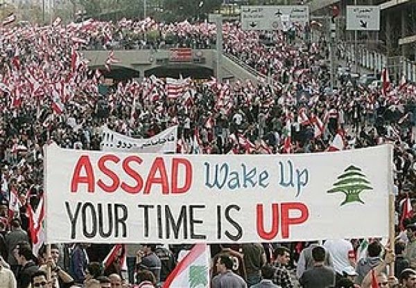
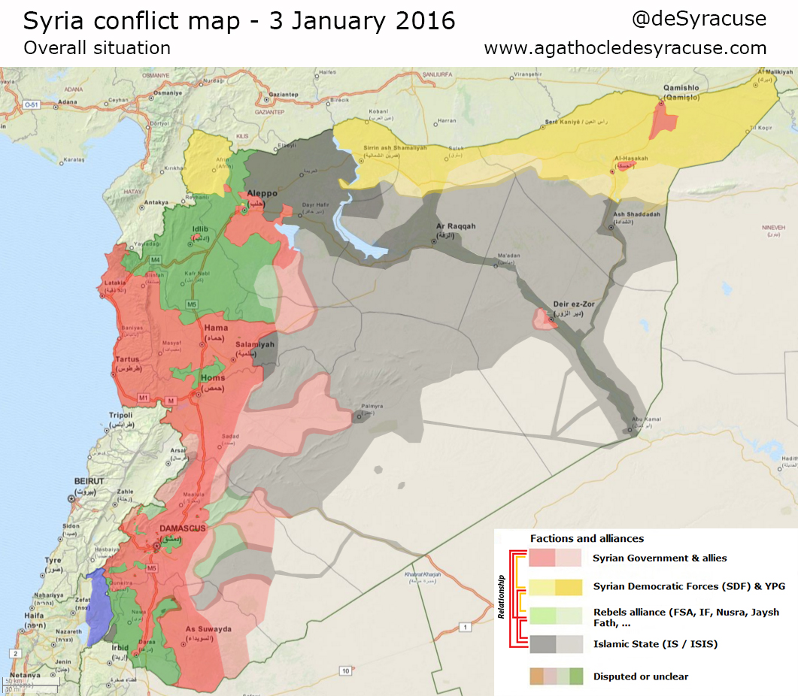

Introduction to the Conflict

The conflict in Syria began in 2011 during the popular uprising now known as the Arab Spring. During this revolutionary period many Islamic Countries, including Tunisia, Libya, Egypt, erupted in protests against thier tyranical rulers. These protests relied on powerful social media and images, like the one seen above, in order to capture the worlds attention Several of these protests successfully ousted their leaders with little or no bloodshed. However, others, like Syria erupted into a full blown and devastating civil war

In Syria the protests began as a way to oust the brutal regime led by Bashar al-Assad. Protests, like in many other contries, began peacefully. However as the protesters gained momentum the regime responded with violence. Often when a regime makes war on its own people the international community will step in and attempt to broker peace. In syria this was not possible. Thus, The population of Sryia felt as though they had no choice, but to fight back against the Assad regime.
the BBC has done a fantastic job reporting on the conflict. A particularly comprehensive article can be found here
Escalation and the Combatants
As the civil war escalated several separate and competing groups rose to power in Syria. The above map outlines the frontlines of the conflict as well as the most powerful combatants involved. You can see that the conflict is highly complex with alliances forming and disentigrating every month. Unfortunately, for american interests, the formerly prominant but poorly funded and equipped Free Syria Army, a group which advocated for democracy and secular living, has been all but destroyed as more extremist groups join the conflict. Below I will detail the situtatioin in regards to each of the combatants